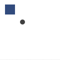

fill
fill(r, g, b, a=1.0)
fill(h, s, b, a=1.0)
fill(c, m, y, k, a=1.0)
fill(k, a=1.0)
fill(color)
Sets the current fill color. All shapes, paths and text following this command will be drawn in this fill color. The color is either specified in terms of RGB, HSB or CMYK depending on the current colormode(). Each RGB, HSB or CMYK parameter ranges between 0.0 and 1.0. The default colormode is RGB. The last parameter is optional and sets the alpha (opacity) value. Additionally, fill() can be called with just one parameter that sets the gray value, or with the color value returned from the color() command.
 |
fill(0.2, 0.3, 0.5)
rect(10, 10, 20, 20)
fill(0.3)
oval(40, 40, 10, 10) |